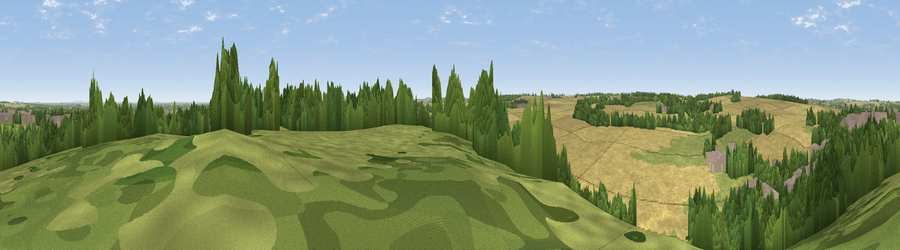

Brodsworth Hill
#30357 in England · top 58% of its area beats it · near WoodlandsThe view, rendered

A 360° render of this exact spot computed from the terrain model, tree cover and land cover — summer colours, afternoon light, calibrated against photographs of famous viewpoints. Real trees, hedges and buildings will differ in detail.
The panorama
Grey silhouette: terrain skyline in each direction (720 bearings, Earth curvature and refraction included). Dashed green: skyline with trees (+15 m) and buildings (+8 m) as obstacles. Blue strip: how far the ground is visible on each bearing.
Where the view opens
Wedge length = distance to the farthest visible ground on that bearing (vegetation-aware). Rings at 10, 25 and 50 km.
What fills the view
47% cropland · 22% grassland · 21% woodland · 10% built-up
Angular shares of the visible panorama (visual magnitude), not map area. Landscape diversity 0.55 (0–1 Shannon).
Key numbers
More beautiful places nearby
The staircase of upgrades: each row has a higher view potential than everything closer. Driving times are estimates from straight-line distance, calibrated against real road routing — check an actual route before setting out.
| Place | Direction | Drive | Score |
|---|---|---|---|
| Viewpoint near Carcroft | NE · 4 km | ~9 min | 43.5 |
| Hickleton Hill | WSW · 4 km | ~9 min | 55.2 |
| Viewpoint near Barnburgh | SW · 4 km | ~10 min | 55.9 |
| Viewpoint near High Melton | SSW · 5 km | ~12 min | 58.5 |
| Viewpoint near Cadeby | SSW · 6 km | ~13 min | 60.5 |
| Viewpoint near Grimethorpe | WNW · 10 km | ~19 min | 63.8 |
| Hoober Stand | SW · 14 km | ~26 min | 64.2 |
| Viewpoint near Maltby | S · 15 km | ~27 min | 70.8 |
53.55861, -1.21308 · source: dobih hill · position refined by local search. Computed location — check access rights before visiting.